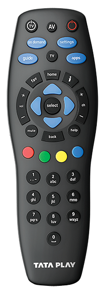

Google lens v.s Mobilenet Model
Test Image -

Output on
Google lens
- Tata Play TV remote
Output on
Mobilenet Model
- Remote
Result -
Google Lens is more accurate and most informative
It is logical that Google lens is useful to us.
I have tested 10 objects which lens got them more accurate but mobilenet gives only a simplish name,
so I advice that Google lens is the one for R-Kart.
Thank you! Aarav Saxena.